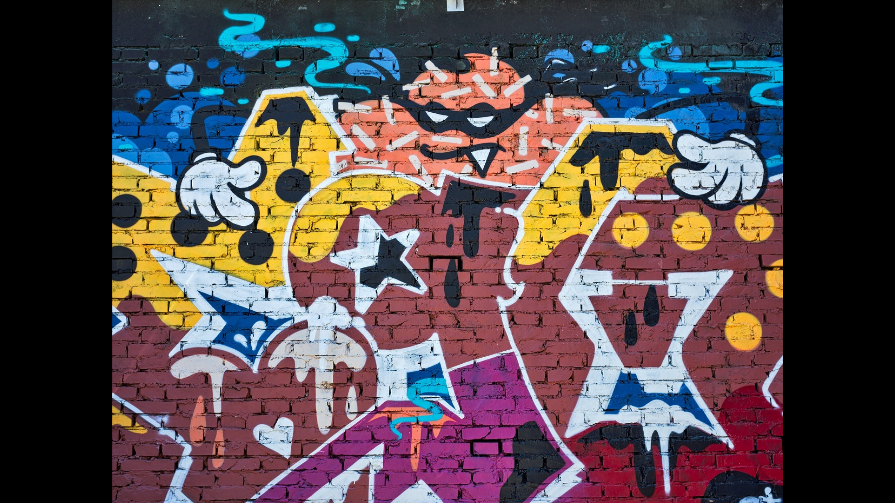

| 그래피티
작가미상
거리 미술은 처음 낙서로 시작되었으며 현재는 야외전시, 거리
퍼포먼스, 낙서, 벽화 등 개방된 공간에서 예술가들이 행하는 예술을
포괄적으로 지칭하고 있다. 벽돌로 지어진 벽에 그려진 그래피티를 부수는
인터랙션을 주기 위해 three.js와 ammo.js를 사용했으며 Three.Raycast()를
통해 해당 방향을 읽어오고 ammo.js를 활용한 물리적인 힘을 가해 벽이
부숴지도록 가공 및 제작했다. 인터랙션 웹 전시회의 마지막 작품으로서,
벽을 부수고 난 후 ‘Thank You’ 라는 문구를 추가해주었고, 가로로 마우스를
이동함에 따라 이를 회전시킬 수 있도록 했다.